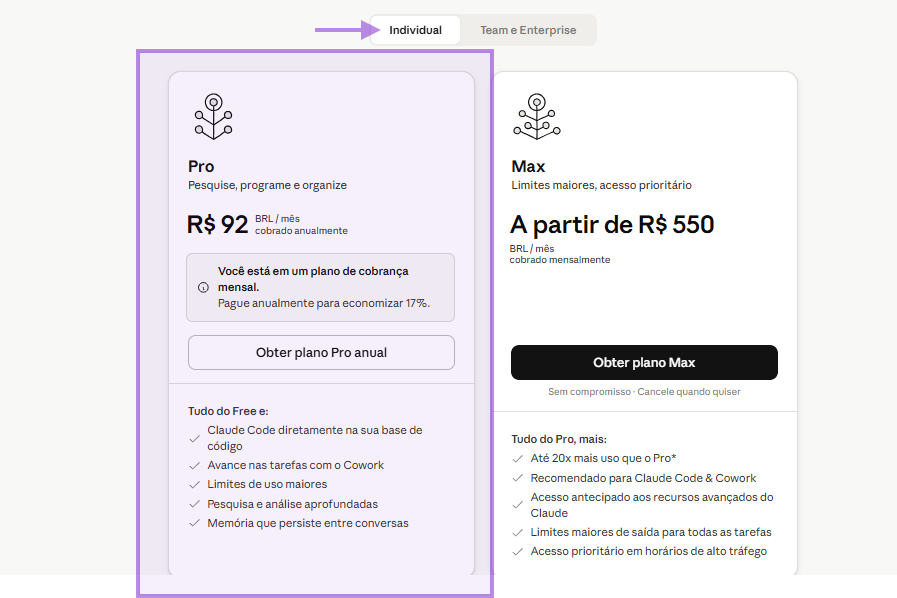
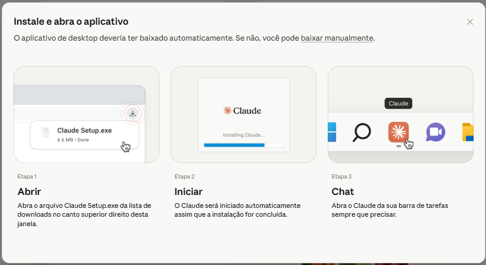
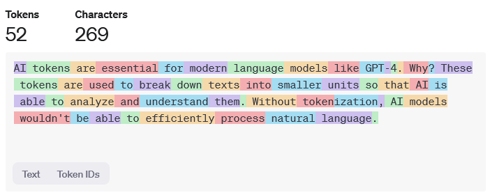
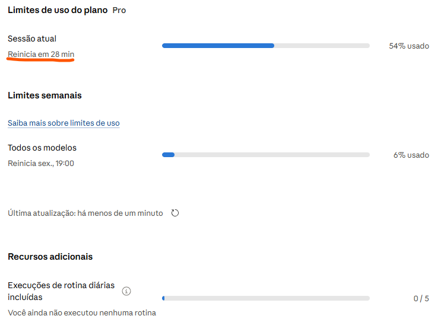

Planos e Preços
Antes de configurar o ambiente, escolha o plano adequado para o seu uso. Para acompanhar os exercícios práticos com mais conforto, o plano Pro costuma ser o ponto de partida para usuários individuais. Ainda assim, todos os planos têm limites de uso, que podem variar conforme modelo, horário, duração da sessão e volume de arquivos.
Free
Acesso inicial ao Claude, com limites de uso mais restritos.
Pro
Mais capacidade de uso, acesso a recursos avançados e melhor experiência em tarefas práticas.
Max
Limites ampliados para tarefas longas, análises maiores e uso recorrente.
Team
Recursos de colaboração, administração e uso compartilhado em times.
Enterprise
Governança, segurança, administração avançada e condições empresariais.

Instalação do Claude no computador
A versão desktop deixa o Claude mais acessível no dia a dia. Ela permite abrir o aplicativo diretamente no computador, trabalhar com recursos do ambiente local e preparar o caminho para algumas integrações mais avançadas.
Acesse a página oficial de downloads. Use o botão abaixo para baixar a versão correta para Windows ou Mac.
Execute o instalador. Depois do download, abra o arquivo baixado e siga as instruções da tela.
Faça login na sua conta. Use o mesmo e-mail da assinatura ou da conta que você vai usar durante as aulas.

Em computadores corporativos, pode ser necessário ter perfil de administrador ou solicitar a instalação para o setor de TI. Se a instalação pedir senha de administrador ou bloquear a execução, não force o processo: peça apoio ao responsável técnico.
Como verificar se seu perfil é administrador no Windows:
- Abra o menu Iniciar e pesquise por Configurações.
- Acesse Contas.
- Entre em Suas informações.
- Veja se aparece a indicação Administrador abaixo do nome da conta.
- Se aparecer Usuário padrão, solicite a instalação para o TI.
Instalação do suplemento do Claude no Excel
O suplemento permite usar o Claude diretamente dentro do Excel. Ele ajuda em tarefas como limpeza de dados, padronização, criação de fórmulas, análise de tabelas e apoio na organização das informações.
Abra o Excel.
Acesse Suplementos → Mais suplementos.
Pesquise por Claude.
Escolha a opção adequada para o tipo de conta que você usa.
Claude by Anthropic for Excel
Indicado para quem está logando com a conta pessoal do Claude.
Claude for Microsoft 365
Indicado para quem está usando uma conta corporativa do Claude.
Para usar esse suplemento, é preciso ter um plano ativo do Microsoft Office 365 e um plano ativo do Claude.

Como baixar o Claude no celular
O aplicativo mobile ajuda em consultas rápidas e continuidade de conversas. Ele é útil para revisar ideias, continuar uma conversa fora do computador e acessar o Claude em momentos de estudo ou trabalho leve.
iPhone ou iPad
- Abra a App Store.
- Pesquise por Claude by Anthropic.
- Confira se o desenvolvedor é Anthropic PBC.
- Instale e faça login na sua conta.
Android
- Abra a Google Play Store.
- Pesquise por Claude by Anthropic.
- Confira se o desenvolvedor é Anthropic.
- Instale e faça login na sua conta.
O que é um token?
Token é a unidade que a I.A usa para ler, processar e gerar informações. Ele pode ser uma palavra, parte de uma palavra, número, símbolo, espaço ou trecho de código. Na prática, quanto maior o texto, mais arquivos e mais complexa a resposta, maior tende a ser o consumo de tokens.
Entrada
Textos, arquivos, imagens, instruções e contexto enviado para o Claude.
Processamento
O raciocínio usado para entender o pedido, analisar dados e comparar informações.
Saída
A resposta gerada: textos, tabelas, códigos, análises, resumos e estruturas.

Limites de uso do Claude
O Claude trabalha com limites de uso. Esses limites controlam o quanto você pode interagir com a ferramenta em determinados períodos e podem variar de acordo com o plano, modelo escolhido, quantidade de arquivos, tamanho das conversas e demanda do sistema.
Limite por sessão
Capacidade disponível dentro de uma janela de uso. Conversas longas e arquivos grandes podem consumir mais rápido.
Limite semanal
Alguns planos exibem limites acumulados para o período da semana, especialmente em usos mais intensos.
Limite por modelo
Modelos mais avançados podem consumir mais capacidade do que modelos mais rápidos e leves.
Para consultar seus limites, acesse Configurações → Uso.

Configurações de segurança
Antes de usar o Claude com arquivos, extensões e memória, revise as configurações principais. Isso ajuda a trabalhar com mais controle, privacidade e previsibilidade.
Geral
- Instruções para o Claude: configure preferências gerais de resposta, estilo e forma de trabalho.
- Notificações: ajuste os alertas conforme sua rotina.
Privacidade
- Ajudar a melhorar o Claude: deixe desmarcado se não quiser contribuir com dados para melhorias.
- Preferências de memória: revise o que pode ser pesquisado, referenciado ou importado.
Em Privacidade, revise a opção Ajudar a melhorar o Claude. Para uso em treinamentos, empresas ou bases com dados sensíveis, a recomendação é manter essa opção desmarcada.
Preferências de memória
A memória ajuda o Claude a manter contexto sobre preferências, instruções e projetos. Nas configurações, revise opções como Pesquisar e referenciar conversas e Importar memória de outros provedores de I.A.
Pesquisar e referenciar conversas
Permite que o Claude use conversas anteriores como referência para dar respostas mais contextualizadas.
Importar memória
Ajuda a migrar preferências e contexto de outros provedores de I.A, quando esse recurso estiver disponível para sua conta.
Modo de acesso a ferramentas
Nas configurações de ferramentas, use a lógica de carregar apenas quando necessário. Quanto menos ferramentas ativadas sem necessidade, menor a chance de confusão, consumo desnecessário ou acesso indevido a informações.
1 ferramenta, 3 poderes
Claude Chat
Pensar. Ideal para conversar, organizar ideias, escrever, analisar informações e estruturar raciocínios.
Cowork
Fazer. Ajuda a trabalhar com arquivos, pastas, documentos, relatórios e tarefas mais operacionais.
Claude Code
Construir. Voltado para código, desenvolvimento, automações técnicas, sites, apps e integrações.
Quando usar cada ferramenta
- Criar ideias para uma aula, apresentação ou produto
- Criar mensagens de WhatsApp, e-mails ou páginas
- Comparar temas, resumir conteúdos e organizar conceitos
- Perguntar algo simples durante o dia
- Pesquisa e análise de informações de forma rápida
- Continuar uma conversa fora do computador
- Precisa criar arquivos diretamente no computador
- Quer executar código de verdade
- Precisa conectar ferramentas externas de forma operacional
- Precisa automatizar uma rotina com arquivos locais
Análise detalhada
| Critério | Claude Chat | Cowork | Claude Code |
|---|---|---|---|
| Onde roda | Navegador web | App Desktop | Terminal CLI |
| Visual / UX | Chat familiar | Interface moderna | Linha de comando |
| Precisa instalar? | Não | Sim — Desktop App | Sim — Node + CLI |
| Disponível em | Web + Mobile | Mac + Windows | Mac + Linux + Windows |
| Critério | Claude Chat | Cowork | Claude Code |
|---|---|---|---|
| Ler arquivos | Upload manual | Pasta selecionada | Acesso total |
| Criar / editar | Só na tela | Direto na pasta | Qualquer arquivo |
| Navegar pastas | Não | Pasta escolhida | Qualquer diretório |
| Acesso à internet | Busca limitada | Via MCPs | Terminal + MCPs |
| Critério | Claude Chat | Cowork | Claude Code |
|---|---|---|---|
| Gera código | Sim | Sim | Sim |
| Roda código | Artifacts preview | Shell sandbox | Shell completo |
| Tarefa | Claude Chat | Cowork | Claude Code |
|---|---|---|---|
| Responde perguntas | Sim | Sim | Sim |
| Executa tarefas definidas | Parcial | Sim | Sim |
| Toma decisões intermediárias | Não | Sim | Sim |
| Itera até resolver | Não | Parcial | Sim |
| Planeja múltiplos passos | Não | Sim | Sim |
| Lida com erros sozinho | Não | Parcial | Sim |
Qual modelo usar?
Pode parecer que um modelo mais poderoso "se esforça menos" — mas é o contrário. Opus processa mais, raciocina mais fundo e custa mais tokens por tarefa, por isso tem maior impacto nos seus limites. Haiku é mais leve e econômico justamente por ser mais direto e rápido.
Opus
Raciocínio complexo, análise profunda e código avançado. Estratégia e decisões difíceis.
Sonnet
Equilíbrio ideal. Uso diário, relatórios, conteúdo, análise e automações.
Haiku
Tarefas rápidas e repetitivas. Resumos simples, classificações e respostas curtas.